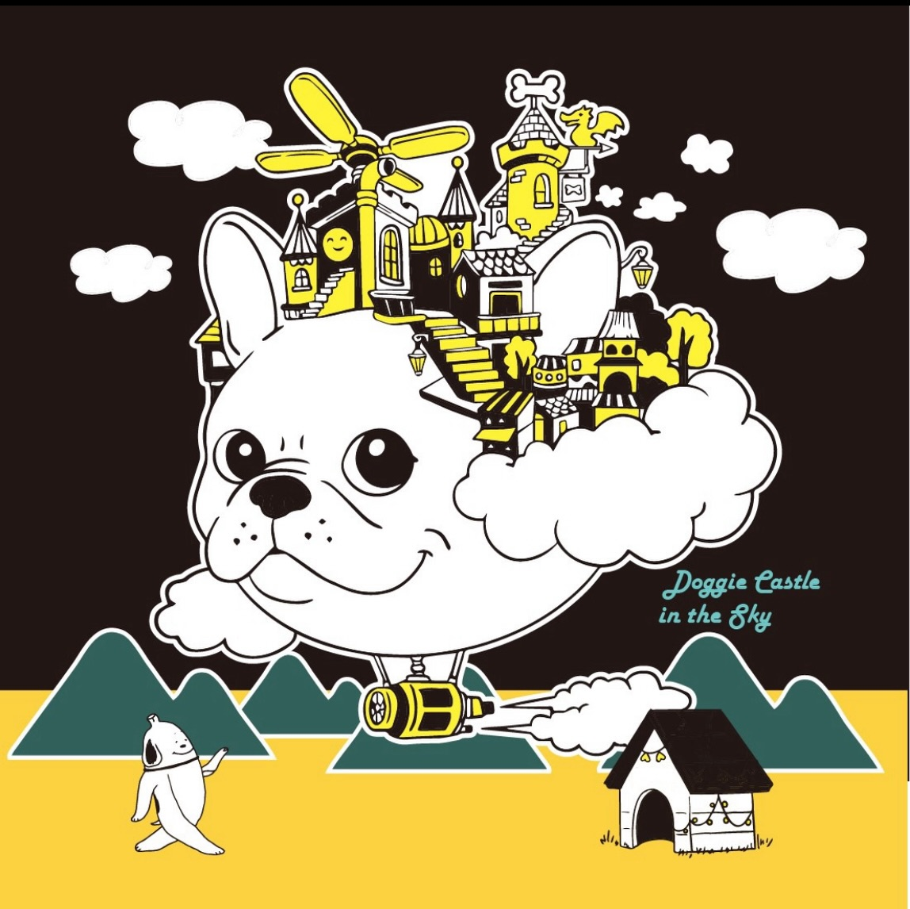
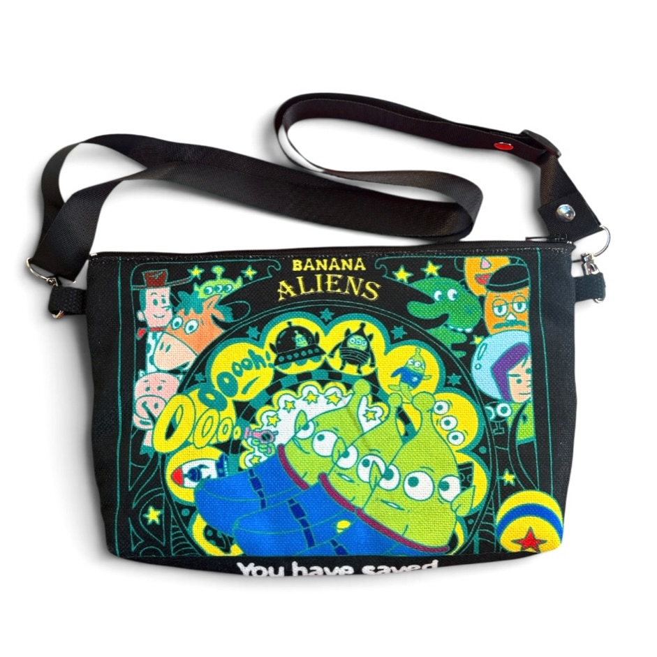
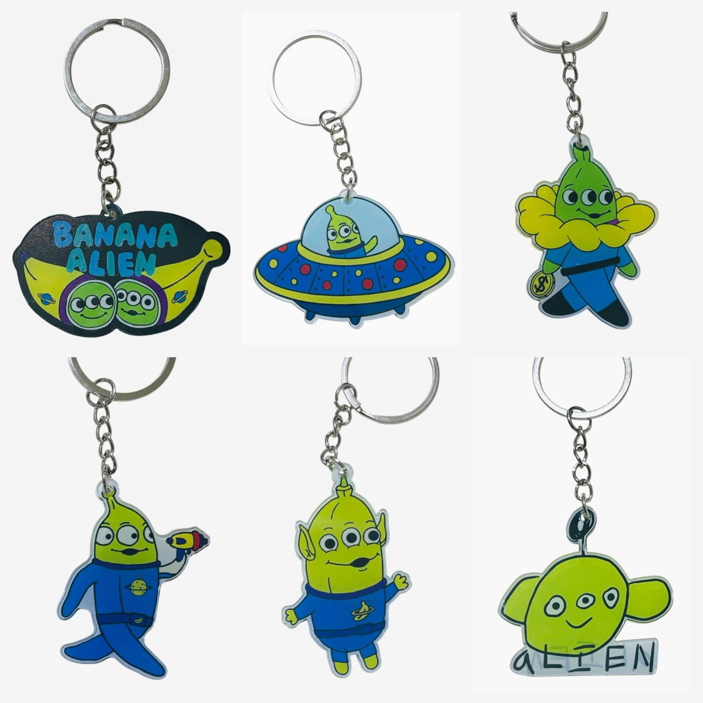

Discover Taiwan through its artists
Explore illustration, original characters and everyday objects by independent Taiwanese artists. B Tai brings their work together with the stories behind it, so you can get to know the people creating it and find something to carry, give or keep.
Explore the collection
Our first selection introduces TungB studio: illustrated bags, wallets and accessories filled with banana characters, visual jokes and references to life in Taiwan.
About B Tai
TungB studio
Meet the artist behind the banana characters and illustrated accessories in our first collection.

Illustrated accessories
Discover illustrated accessories in the first collection.
For independent shops.
We are preparing our first collection for European retailers. Find out what is available and how to enquire.
Explore stockist enquiries